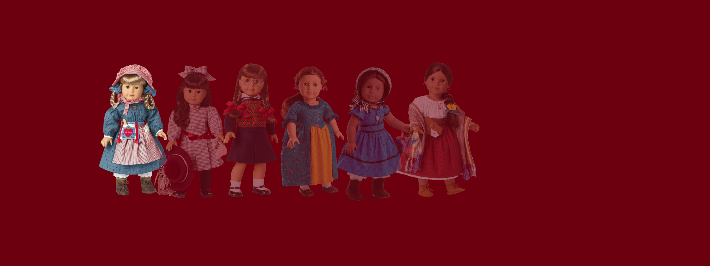
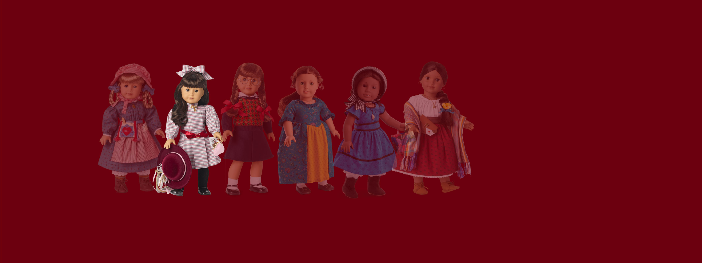
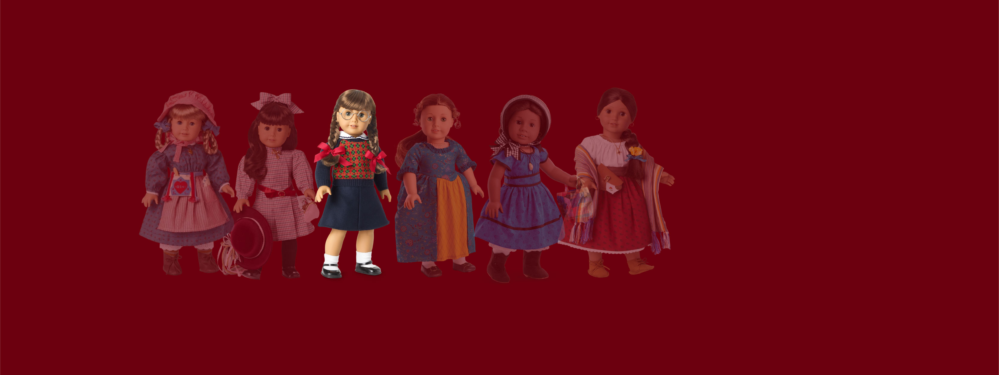
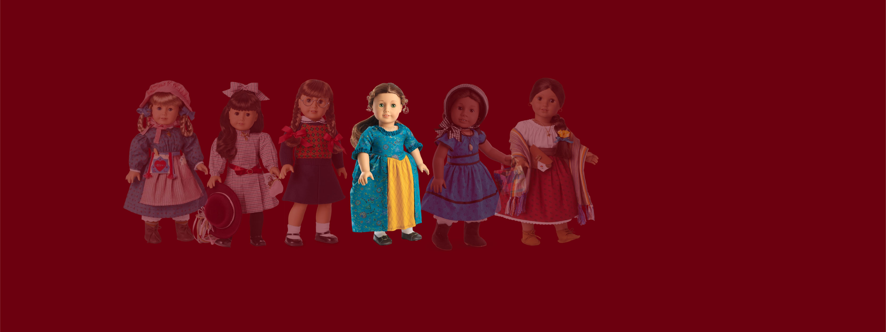
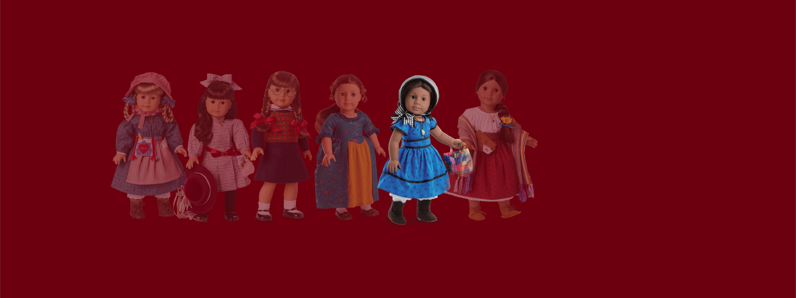
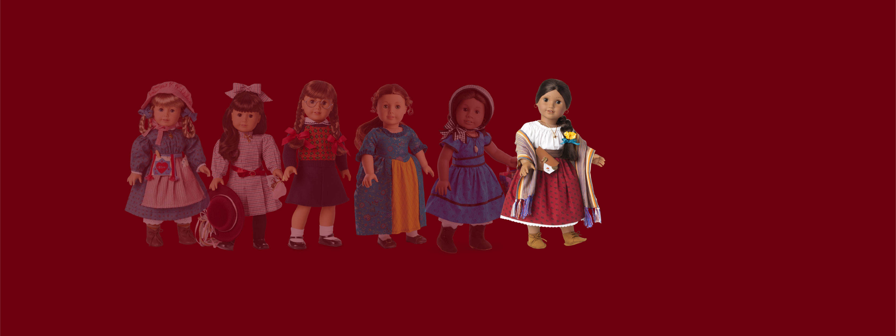

Imagine the heroine of your favorite story sitting next to you, along with her outfits, toys, furniture, and more,
exactly as described in her stories.
This was the pitch of American Girl Dolls as launched in 1986: each doll was a distinct companion for girls
ages 8-12. These dolls were both fictional characters and physical toys, not designed for the same kind of open-ended play in the
way most others are. The toys, school supplies, outfits, and even their furniture are presented as bespoke historical recreations in miniature.
This detailed backstory came at a premium; American Girl quickly became both status symbol and aspirational.






Kirsten's pioneer story - immigrating from Sweden to Minnesota territory - capitalized on the 80s popularity of Little House on the Prairie.
Samantha's stories focus on emerging ideas of womanhood clashing with Victorian morals at the start of the 20th century.
Molly's dad is deployed and her mother enters in the workforce as a result of the war.
Felicity witnesses key events of the Revolutionary War in Colonial Williamsburg.
Addy is the first African-American character; her story begins by escaping enslavement with her mother.
The first Hispanic doll and the last character to be released before the Mattel acquisition.
Not exactly the most scalable model. Something needed to change.
In 1995, the company expanded their lineup dramatically with "Truly Me" dolls. While not composed of individual characters like the historical line, the promise was a diverse range of features that would give girls a chance to find a doll that reflects who they are. This expansion made the company profitable and desirable enough to be acquired by Mattel in 1998. Later on, more attempts to bring detailed characters into a modern context package would manifest with limited-run "Girl of the Year" characters and a flash-in-the-pan "Contemporary" line.
Every doll below is a real record from the American Girl inventory list — skin tone, face mold, hair color, and eye color. Try to find yourself in the full lineup in each of these features... then see whether the girl you're building actually exists.
A catalog that feels expansive at the level of the individual doll can look surprisingly narrow when viewed as a whole. There are different skin tones, hair and eye colors, and the promise of infinite ways to style your girl. But those differences aren't distributed evenly; they cluster. Some traits appear frequently; others are rare. Some combinations are readily available; others barely exist. Allegedly, the market determines which versions of girlhood are easiest to manufacture, package and sell... but depending on your desires, there are some glaring omissions.
That distinction matters because representation goes beyond a menu of all possible features. It is a matter of which options can coexist. A brand can offer a wide range of individual traits while still producing a relatively small range of complete identities. The right question to ask isn't “How many kinds of girs are possible?”, rather “Which girls keep showing up?”
There is a paradox in the promise of infinite possibility as it coexists with a very finite product line. American Girl can hand a child a menu of choices that feels personal and empowering--but the limitations to this menu have already been designed and priced for optimal profit.
Every additional face mold, hair texture, body type, accessory or outfit is another product to design, manufacture, distribute and sell. Representation has to coexist with the basic economics of making things.
This doesn't necessarily mean that someone at American Girl is sitting around deciding which girls deserve to exist, the process is subtler, more obscure. A corporation responds to research, demand, manufacturing constraints and assumptions about what families will buy - most of which at this scale is a purely internal. Some forms of difference become profitable products, others remain outside the catalog because they are harder to package, scale, predict, or market effectively. Risk-aversion is often the name of the game.
American Girl is still as of publication a Mattel subsidiary, nostalgic attachments fostered by the brand over four decades notwithstanding. When a corporation of such scale sells a version of diversity, it is making decisions about which differences to foreground, which combinations to make available and which kinds of girlhood are worth turning into inventory. The result may be more inclusive than what came before while still being shaped by limitations of the market, audience expectations, unconscious biases, and more.
American Girl's achievement isn't that it has finally figured out how to represent every girl. It is that it has made the boundaries of representation feel customizable. But looking at the lineup and its limitations, a big question question still remains when we are invited to find ourselves and create our own stories in a brand, how much freedom do we have to push beyond the decisions someone has already made about what to sell us?